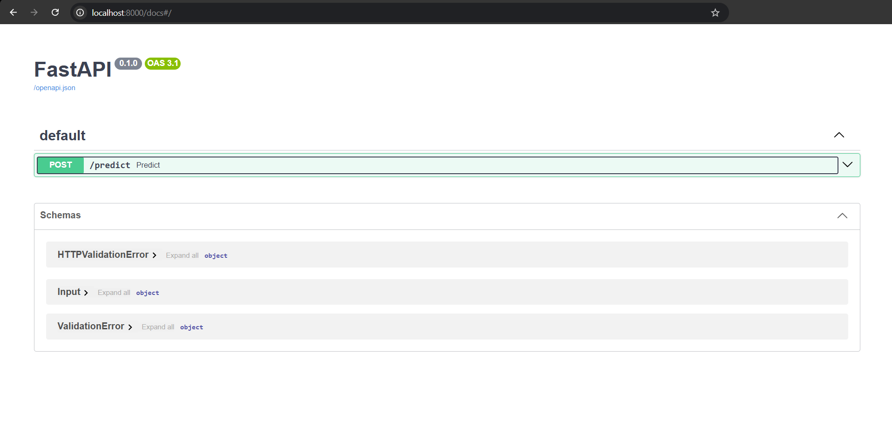
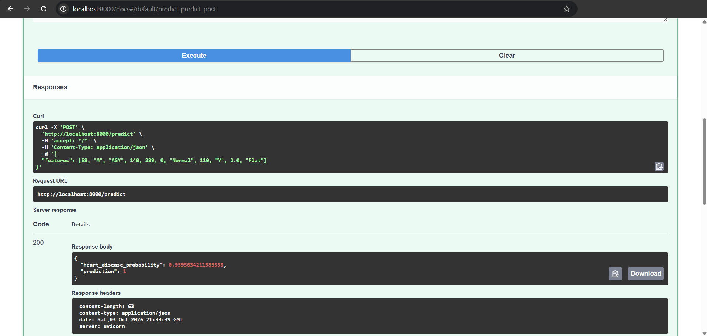

Etapa 3 · API con FastAPI y Docker#
Al final del notebook Etapa 2 · Modelado con validación segura se exporta el mejor estimador de GridSearchCV a app/model.joblib. Ese archivo contiene el pipeline completo (imputación, codificación, escalado y clasificador), así que la API recibe los datos clínicos tal como aparecen en el dataset y aplica las mismas transformaciones del entrenamiento.
Archivos de esta etapa en GitHub: app/api.py, docker/Dockerfile y docker/requirements.txt.
Exportación del modelo#
Esta es la celda del notebook Etapa 2 · Modelado con validación segura que guarda el modelo en app/model.joblib (la ruta que lee la API) y una copia en la raíz del proyecto:
app_dir = ROOT / "app"
app_dir.mkdir(exist_ok=True)
joblib.dump(grid.best_estimator_, app_dir / "model.joblib") # lo carga la API (app/model.joblib)
joblib.dump(grid.best_estimator_, ROOT / "model.joblib") # copia en la raíz (estructura Etapa 0)
resumen = {
"modelo": MODEL_NAME,
"mejores_parametros": {k.replace("clf__", ""): v for k, v in grid.best_params_.items()},
"auc_cv": round(float(grid.best_score_), 4),
"auc_test": round(float(auc_test), 4),
"accuracy_test": round(float(acc_test), 4),
"sklearn_version": sklearn.__version__,
}
print(json.dumps(resumen, indent=2, ensure_ascii=False))
API REST#
La API se construye con FastAPI [Ramírez, 2018] y expone un único endpoint, POST /predict.
from fastapi import FastAPI
from pydantic import BaseModel
import joblib
import pandas as pd
model = joblib.load("app/model.joblib")
app = FastAPI()
FEATURES = ["Age", "Sex", "ChestPainType", "RestingBP", "Cholesterol",
"FastingBS", "RestingECG", "MaxHR", "ExerciseAngina",
"Oldpeak", "ST_Slope"]
class Input(BaseModel):
features: list
@app.post("/predict")
def predict(data: Input):
X = pd.DataFrame([data.features], columns=FEATURES)
proba = model.predict_proba(X)[0][1]
return {"heart_disease_probability": proba, "prediction": int(proba > 0.5)}
Los valores se envían en el orden Age, Sex, ChestPainType, RestingBP, Cholesterol, FastingBS, RestingECG, MaxHR, ExerciseAngina, Oldpeak, ST_Slope. Dentro de /predict se arma un DataFrame con esos nombres de columna, porque el dataset incluye variables de texto y el ColumnTransformer del pipeline las busca por nombre (el código del enunciado usa un arreglo de NumPy, que no sirve con variables de texto).
Contenedor Docker#
FROM python:3.10-slim
WORKDIR /app
COPY docker/requirements.txt .
RUN pip install --no-cache-dir -r requirements.txt
COPY app/ ./app/
CMD ["uvicorn", "app.api:app", "--host", "0.0.0.0", "--port", "8000"]
fastapi
uvicorn
scikit-learn==1.6.1
joblib
pydantic
pandas
La versión de scikit-learn está fija porque el modelo debe cargarse con la misma versión con la que se entrenó [Merkel, 2014]. Se usa la 1.6.1 porque funciona tanto en Python 3.9 (equipo local) como en el Python 3.10 del contenedor.
Construcción y ejecución, desde la raíz del proyecto:
docker build -t heart-api -f docker/Dockerfile .
docker run -p 8000:8000 heart-api
Salida del contenedor al iniciar:
INFO: Started server process [1]
INFO: Waiting for application startup.
INFO: Application startup complete.
INFO: Uvicorn running on http://0.0.0.0:8000 (Press CTRL+C to quit)
Evidencia#
La documentación interactiva de FastAPI queda disponible en http://localhost:8000/docs:


Figura 1 Documentación interactiva de la API, servida desde el contenedor heart-api, con el endpoint POST /predict.#
Al ejecutar POST /predict con un paciente de alto riesgo, el contenedor responde con código 200:
curl -X POST http://localhost:8000/predict -H "Content-Type: application/json" \
-d '{"features": [58, "M", "ASY", 140, 289, 0, "Normal", 110, "Y", 2.0, "Flat"]}'


Figura 2 Respuesta del contenedor: código 200, probabilidad de enfermedad de 0.9596 y predicción 1.#
{"heart_disease_probability": 0.9596, "prediction": 1}
Lección aprendida: la versión de scikit-learn debe coincidir
En el primer arranque del contenedor, el modelo había sido guardado con scikit-learn 1.3.0 y la imagen tenía la 1.6.1. Aparecieron advertencias InconsistentVersionWarning y POST /predict devolvió error 500 ('DecisionTreeClassifier' object has no attribute 'monotonic_cst'). La solución fue fijar scikit-learn==1.6.1 en docker/requirements.txt y volver a ejecutar el notebook 2 con esa versión para regenerar app/model.joblib. Con el modelo regenerado, el contenedor arranca sin advertencias y responde correctamente.